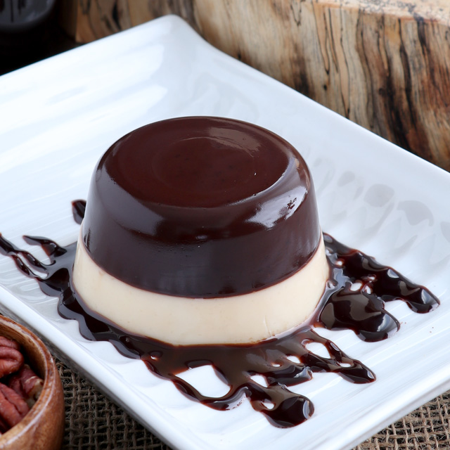

How to Cook Black Sambo
Ingredients
Black Layer:
- 1 can evaporated milk (big)
- 1 cup white sugar
- 2 packs of Knox unflavored Gelatin (let it bloom in 1/2 cup cold water)
- 1/2 cup Pure Dutch Cocoa or Hersheys unsweetened powder (dissolved in 1/3 cup hot water)
Cream Layer:
- 1 cup water
- 2 packs of Knox unflavored Gelatin
- 1 can of condensed milk (big)
- 1 can of Nestle Cream
Cook
First Layer:
- In a bowl melt 2 packs of Knox in 1/2 cup cold water.
- In a separate bowl dilute cocoa powder in 1/3 cup hot water and stir.
- In a saucepan heat evaporated milk, on a low fire and add white sugar and stir until sugar dissolves.
- Add the melted cocoa and continue to stir until well blended, and lastly add in the knox mixture and stir continuously until dissolves and fire off.
- Let it cool by stirring patiently before placing in the container.
- Freeze for 20 minutes and refrigerate for 2 hours.
Second Layer:
- In a saucepan heat a cup of water over a low fire and pour 1 pack of knox at a time and stir vigorously to dissolve the gelatin completely.
- Add 1 can of condensed milk and stir until well blended.
- And lastly pour in a can of nestle cream and keep stirring to dilute the cream, fire off.
- Keep on stirring until it cools down completely before adding to your choco layer.
- Refrigerate for another 3 to 4 hours for a best results.

More Recipes Here